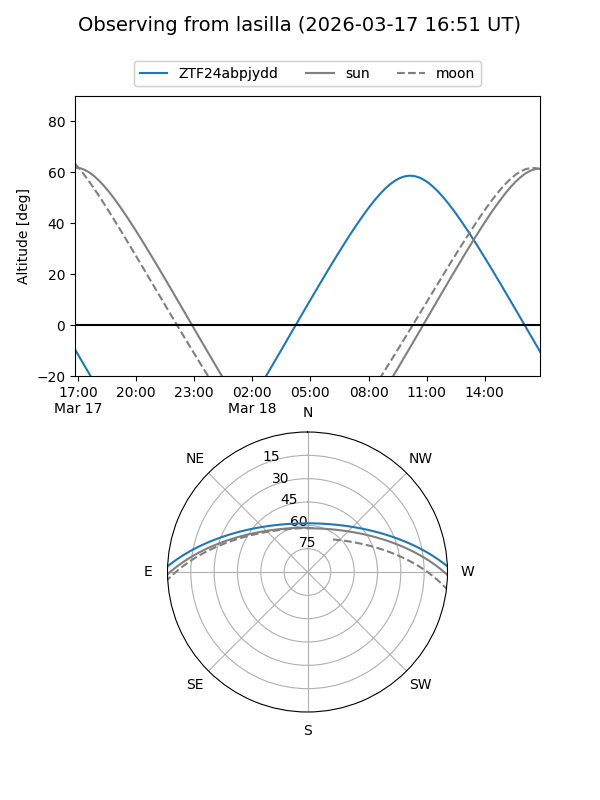
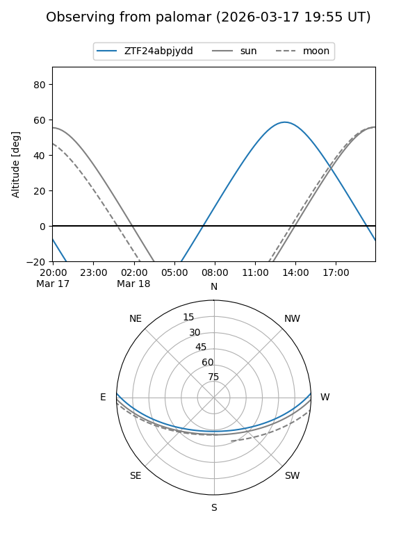

ZTF24abpjydd
Target ZTF24abpjydd at 2026-03-18 14:38
Aliases and brokers:
FINK: link
Lasair: link
ALeRCE: link
alt names
ZTF24abpjydd (ztf,fink_ztf)
Coordinates:
equatorial (ra, dec) = 257.1774,+2.08028
equatorial (HMS+DMS) = 17:08:42.57,+02:04:48.99
galactic (l, b) = (22.5392,+23.70318)
Flags:
Photometry:
last ztfg=17.64
1 ztfg detections
Lightcurve
Visibility


Additional plots